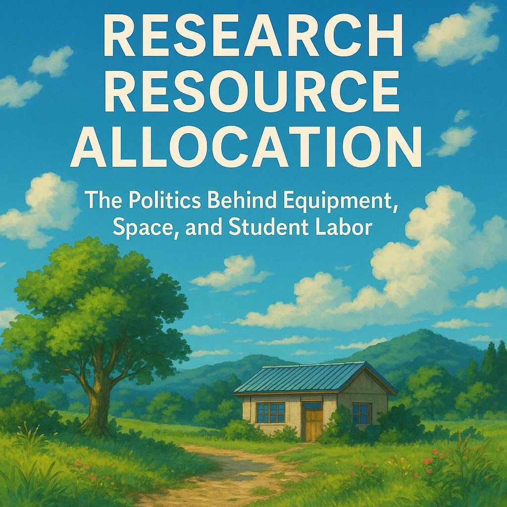

ปัญหาวิจัยหลายครั้งไม่ได้อยู่ที่ใครเก่งกว่าใคร แต่อยู่ที่ใครได้ห้อง เครื่องมือ คน และโอกาสไปก่อนโดยไม่มีใครเห็นภาพรวม
{kind=link}

โพสต์นี้เปิดประเด็นได้คมมากด้วยประโยคที่ว่า เรื่องนี้ไม่ใช่แค่ระบบวิจัย แต่มันคือใครได้ของอะไรไปแล้วโดยที่ไม่มีใครรู้ เพราะปัญหาจริงของงานวิจัยจำนวนมากไม่ได้อยู่เพียงในแบบฟอร์มขอทุน แต่อยู่ในทรัพยากรที่แต่ละคนถืออยู่ก่อนเข้าสู่การแข่งขัน โดยระบบกลับมองไม่เห็นหรือไม่ยอมบันทึกไว้
เมื่อห้อง เครื่องมือ คน และโอกาสถูกกระจายกันแบบเงียบ ๆ ความเหลื่อมล้ำจึงเกิดขึ้นตั้งแต่ก่อนการประเมินทุนเริ่มต้น นักวิจัยบางคนเริ่มจากศูนย์จริง แต่ต้องแข่งกับคนที่มีทุกอย่างพร้อมอยู่แล้วโดยไม่มีใครบอกว่าพร้อมแค่ไหน นี่คือปัญหาเรื่อง research resource allocation ที่ลึกกว่าคำว่าเงิน และกระทบโดยตรงต่อความเป็นธรรมของระบบ
ความเหลื่อมล้ำในงานวิจัยมักซ่อนอยู่ในทรัพยากรที่ไม่เคยถูกนับรวมอย่างจริงจัง
ตัวอย่างที่โพสต์ยกมาชี้ชัดมากว่า ทรัพยากรวิจัยไม่ได้มีแค่เงินทุน แต่รวมถึงห้องทำงาน ห้องแล็บ เครื่องมือ และพื้นที่ที่ใช้ตั้งต้นงาน บางคนไม่มีทุนแต่มีห้องพร้อมตั้งแต่วันแรก ขณะที่บางคนมีทุนแล้วแต่ยังหาพื้นที่ทำงานไม่ได้ ต้องไปยืมห้องประชุมวางคอมพิวเตอร์ทำงานชั่วคราว
หากระบบไม่เก็บข้อมูลเชิงโครงสร้างเหล่านี้ไว้ การประเมินก็ย่อมมองไม่เห็นต้นทุนตั้งต้นที่ต่างกันมาก และจะเผลอปฏิบัติต่อทุกคนเหมือนเริ่มจากฐานเดียวกัน ทั้งที่ในความจริงไม่ใช่เลย
ปัญหาไม่ได้จบที่การมีของมากหรือน้อย แต่รวมถึงวิธีที่ทรัพยากรถูกใช้โดยไม่สร้างคนรุ่นถัดไป
อีกมุมที่สำคัญมากคือบางคนมีทั้งเครื่องมือและทุนสำหรับนิสิต แต่กลับเลือกจ้างมืออาชีพมาทำงานแทน ทำให้ได้ผลลัพธ์วิจัยที่เป๊ะและรวดเร็ว โดยไม่ต้องรับภาระในการสอนหรือพัฒนานิสิตจริง ๆ ประเด็นนี้ทำให้โพสต์ขยับจากคำถามเรื่อง fairness ไปสู่คำถามเรื่อง mission ของงานวิจัยในมหาวิทยาลัย ว่ามันมีไว้เพื่อผลิตผลงานอย่างเดียว หรือเพื่อสร้างคนด้วย
เมื่อระบบให้รางวัลกับผลลัพธ์โดยไม่ถามว่ากระบวนการสร้างผลลัพธ์นั้นหล่อเลี้ยงผู้เรียนหรือไม่ มหาวิทยาลัยก็เสี่ยงกลายเป็นพื้นที่ที่งานวิจัยเดินหน้าได้ แต่ภารกิจการสร้างนักวิจัยรุ่นใหม่กลับอ่อนแอลง
ถ้าไม่ออกแบบระบบจัดการทรัพยากรวิจัยให้โปร่งใส นักวิจัยรุ่นใหม่ก็จะเสียเปรียบตั้งแต่ยังไม่เริ่ม
ช่วงที่ผู้เขียนบอกว่า เรื่องนี้ไม่ใช่เพราะคุณด้อยกว่าใคร แต่เพราะเรายังไม่มีระบบจัดการทรัพยากรวิจัยที่ดีพอ เป็นประโยคที่สำคัญมาก เพราะมันเปลี่ยนการตีความจากปัญหาส่วนบุคคลไปเป็นปัญหาเชิงระบบ นักวิจัยรุ่นใหม่ไม่ได้แพ้เพราะไม่เก่งเสมอไป แต่อาจแพ้เพราะต้องเริ่มจากศูนย์จริงในสนามที่คนอื่นมีต้นทุนพร้อมกว่า
ดังนั้น บทความนี้จึงทำหน้าที่เหมือนการเปิดซีรีส์ด้วยคำประกาศว่า ความจริงบางอย่างของระบบวิจัยไม่มีอยู่ในแบบฟอร์มขอทุน แต่ทุกคนสัมผัสได้จากประสบการณ์ตรง หากมหาวิทยาลัยอยากให้การแข่งขันวิจัยยุติธรรมขึ้น ระบบต้องเริ่มนับและจัดการ ทรัพยากรที่มองไม่เห็นในเอกสาร ให้ได้ก่อน